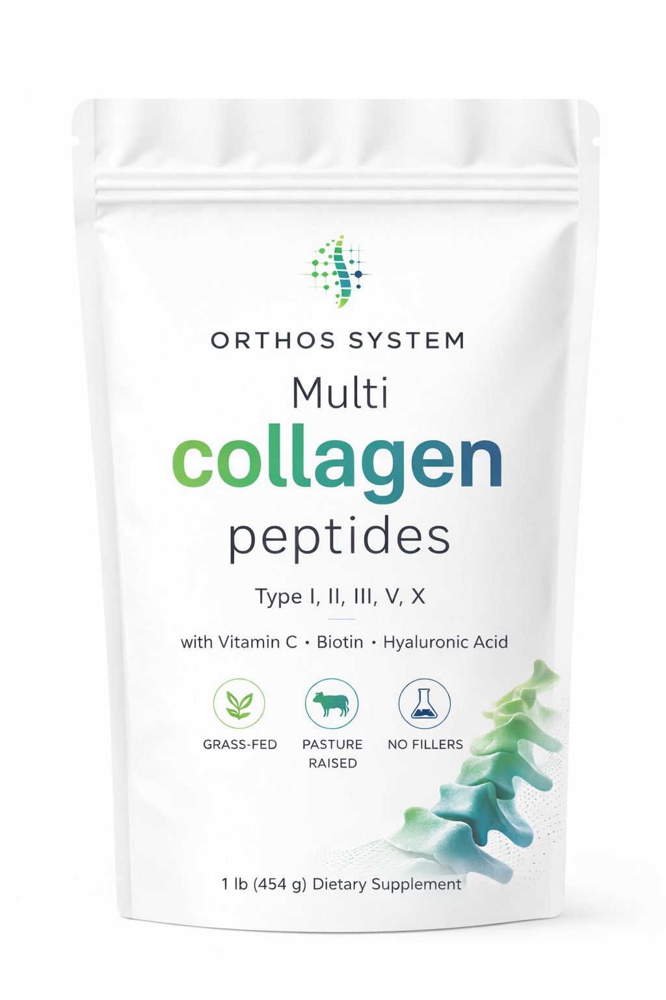

Is the slow‑motion collapse of the upper spine.
And if you are reading this, there is a very high probability it has already started.
Good posture isn't about "standing straight" — it's about having enough muscular strength and endurance to hold proper alignment effortlessly. These are the key muscle groups:
| Muscle group | Role in posture | Common symptom if weak |
|---|---|---|
| Deep cervical flexors | Align the head over the spine | Forward head posture, neck pain |
| Thoracic extensors | Support the mid-back curve | Rounded shoulders, kyphosis |
| Glutes & hip flexors | Stabilize pelvic tilt | Lower back pain, anterior tilt |
| Core stabilisers | Support the lumbar spine | Low back fatigue, disc pressure |
| Serratus anterior | Anchor shoulder blades to ribs | Winging scapula, shoulder pain |
| Posterior chain | Full spinal erection & balance | Fatigue when standing upright |
Most postural problems have a nutritional component that exercise alone can't fix. These three supplements directly support the bone, muscle, and connective tissue structures that keep you upright.

Answer 7 quick questions to find out how serious your postural issues are — and what level of intervention you may need.